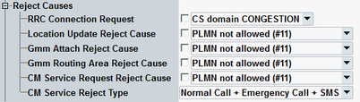

The parameters in this section configure the rejection of RRC connection request, location update requests and attach requests received from the UE.
The rejection causes are defined in 3GPP TS 24.008, section 10.5.3.6 and annex G. The purpose of rejecting UE requests is to test the reaction of the UE: does it repeat the request at all and if so, in which time intervals.
The section is not relevant for reduced signaling. It is only visible if R&S CMW-KS410 is available.

If the checkbox is enabled, the application rejects RRC connection requests of the UE. The R&S CMW signals the specified reject cause in the reject message. If enabled, no connection setup is executed.
Remote command:If the checkbox is enabled, the application rejects location area update requests from the UE and includes the selected reject cause in the reject message. If enabled, no location area update is executed.
Enables or disables the rejection of routing area update requests and selects the rejection cause to be transmitted.
Remote command:If the checkbox is enabled, the application rejects attach requests from the UE and includes the selected reject cause in the reject message. If enabled, no attach is executed.
Remote command:If the checkbox is enabled, the application rejects routing area update requests from the UE and includes the selected reject cause in the reject message. If enabled, no routing area update is executed.
Remote command:If the checkbox is enabled, the application rejects CM service requests from the UE and includes the selected reject cause in the reject message. See also "CM Service Request Type".
Remote command:Specifies, to which type of CM service the parameter "CM Service Request Reject Cause" applies.
Remote command: